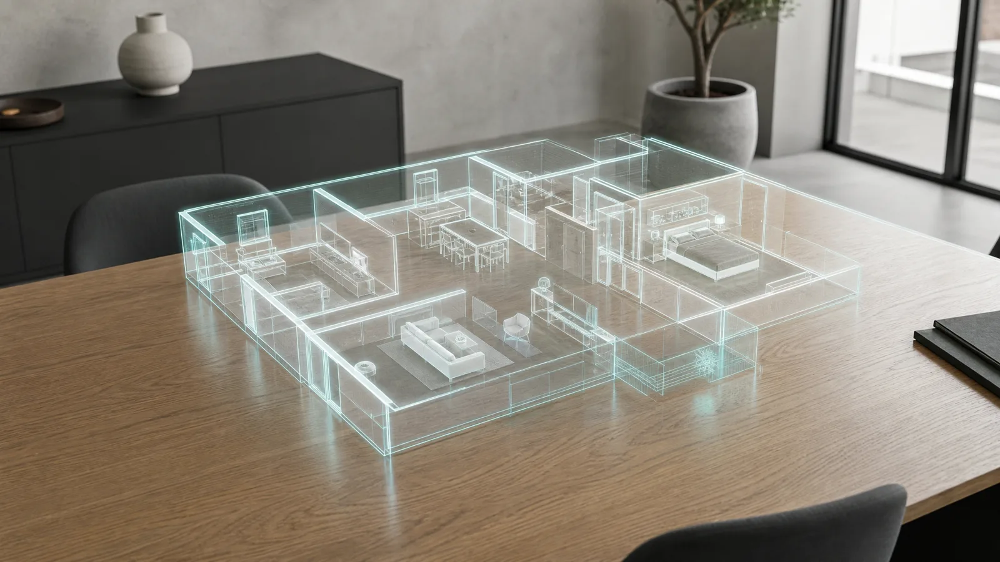
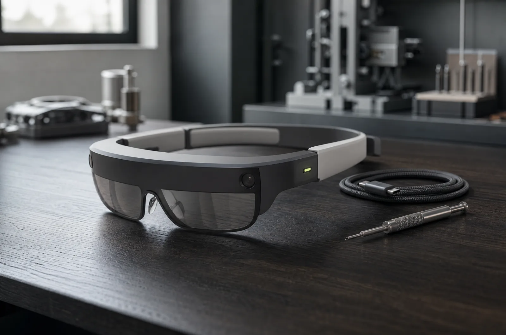
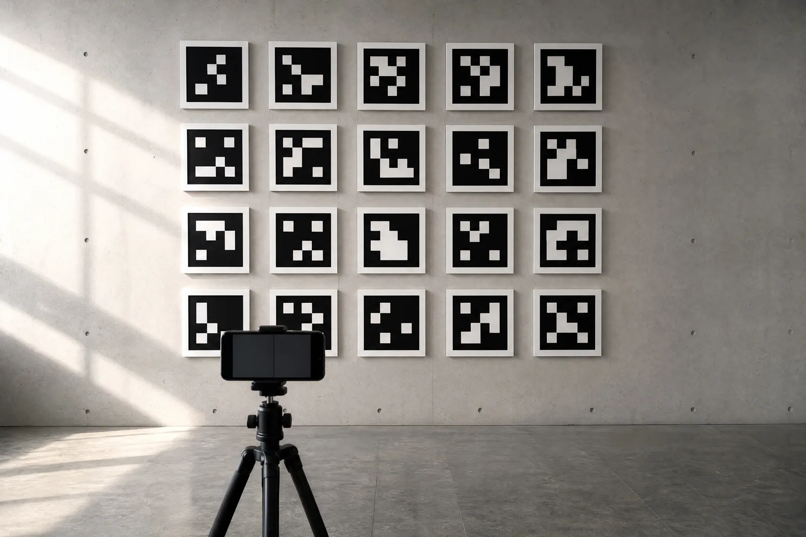

כבר קיים
עובדעולמות 360 שנכנסים אליהם מהדפדפן: חדר אחרי חדר, דלתות, חלונות מידע.
- האתר הראשי של קורוויז ↗בנוי כעולם AR שהולכים בו
- חנות AR, רמי לוי ↗סופרמרקט תלת-ממדי, 13 מחלקות
AR · בשלבי הקמה08 / 2026
חלק מהיכולות כבר עובדות בשטח, חלק על השולחן. הדף הזה אומר בדיוק מה קיים, מה נבנה עכשיו ומה הלאה.

עולמות 360 שנכנסים אליהם מהדפדפן: חדר אחרי חדר, דלתות, חלונות מידע.
שכבות מידע על מרחבים אמיתיים, דרך הטלפון, בלי אפליקציה. מכוונים את המצלמה, המידע נצמד למקום.

עיגון לפי סמנים ומשטחים: קיר, שולחן, מדף, כל אחד יודע להגיד מה הוא ומה עליו.

עסק, מוסד או חלל שמתאים לשכבת מידע, נשמח להתחיל איתכם כשזה מוכן, ולהראות מה כבר עובד עכשיו.
לדבר עם לידור בוואטסאפ